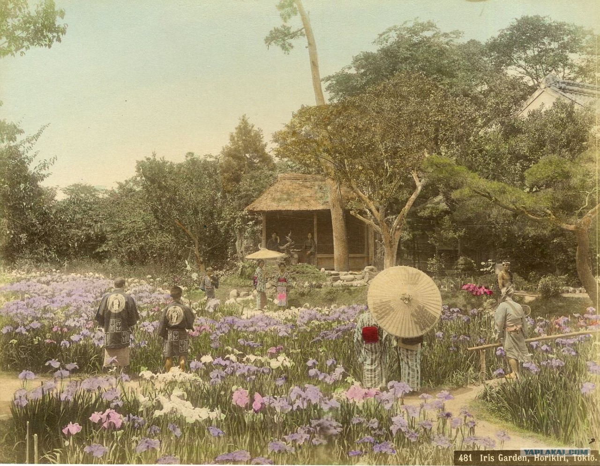
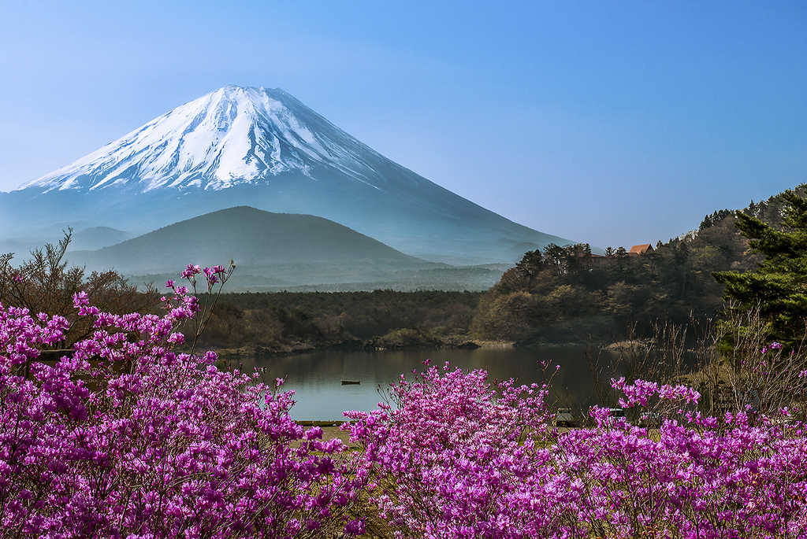
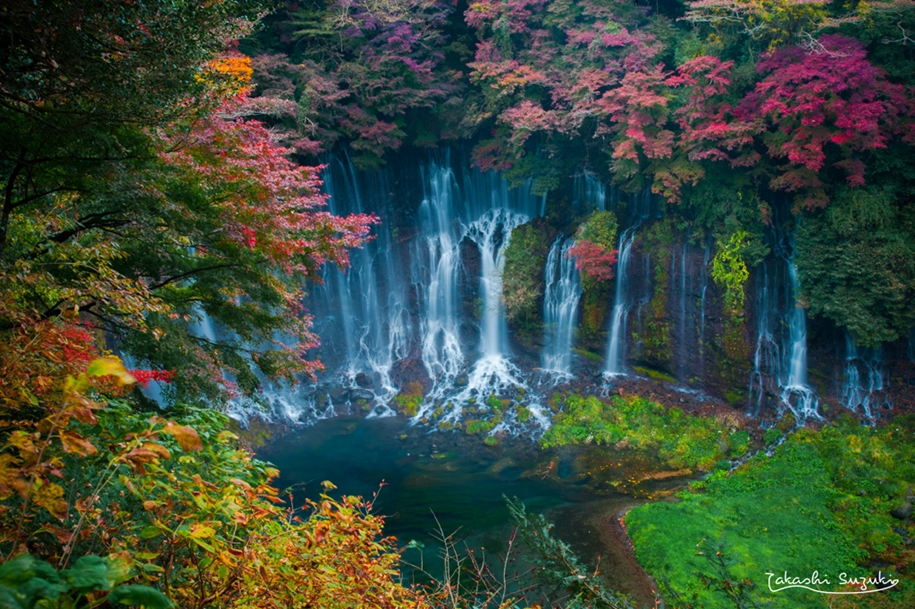
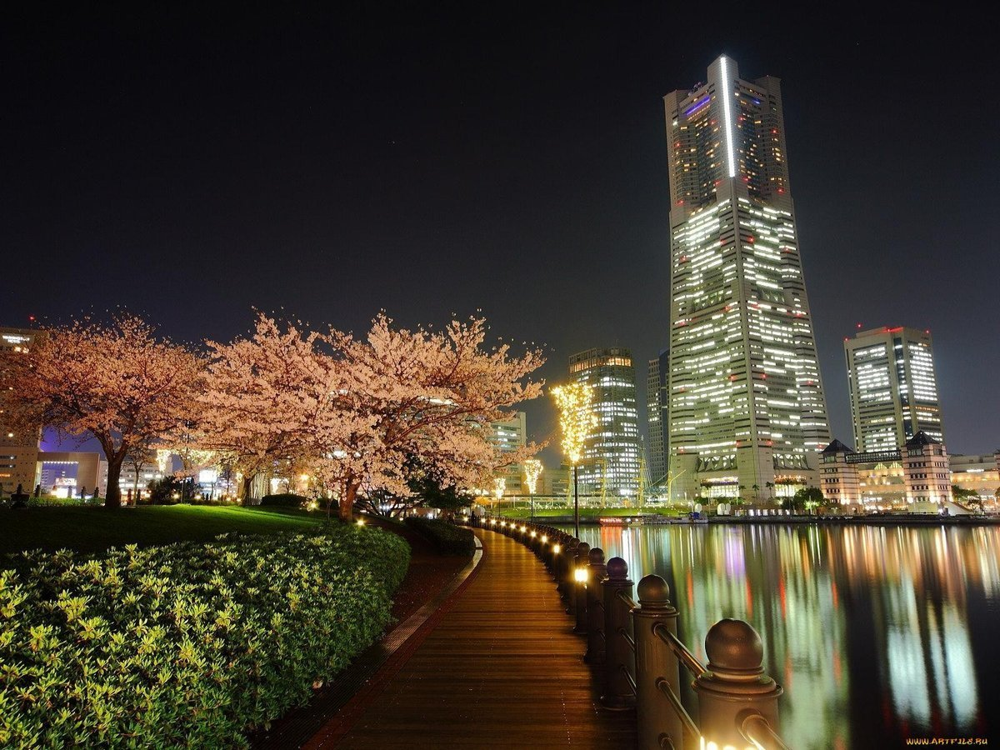

Япония – одно из самых развитых государств мира с тысячелетней историей, самобытной культурой и традициями. Это страна контрастов: возделывающей рис сельской глубинки и многомиллионного Токио, буддистских монахов и одержимых модой тинейджеров, торжественных религиозных ритуалов и шума игорных залов патинко, изысканной храмовой архитектуры и многоэтажных бетонных коробок. Япония расположена в Восточной Азии, на 6852 островах. Самые крупные: Хонсю, Хоккайдо, Кюсю и Сикоку, составляющие 97% всей территории. Японский архипелаг берет свое начало от Охотского моря на севере и простирается далеко на юг до Восточно-Китайского моря и острова Тайвань. Несмотря на сравнительно небольшую площадь – 377 944 км², страна густо населена. По данным 2018 года, здесь проживает 126 225 000 человек. По этому показателю маленькая Япония уступает огромной России всего на 17,2 млн человек.

Фудзия́ма — действующий стратовулкан на японском острове Хонсю в 90 километрах к юго-западу от Токио. Высота вулкана — 3776 м

Водопад Шираито считается одним из самых красивых водопадов в Японии, и находится рядом с горой Фудзи и пятью озерами Фудзи.

Столица и крупнейший город Японии, её административный, финансовый, промышленный и политический центр. Крупнейшая городская экономика мира.